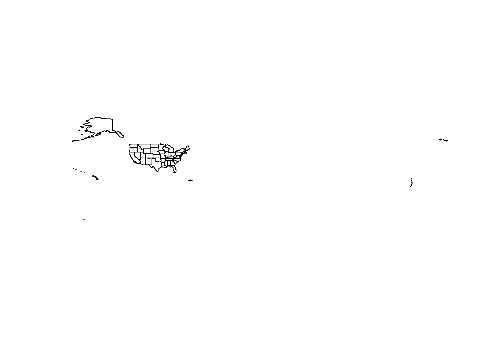

Thematic Mapping with tmap
library(tidyverse) # Tidyverse for Tidy Data
library(readxl)
library(tmap) # Thematic Mapping
library(tmaptools)
library(tigris) # Get Census Geography Poloygons
library(sf)Shapefiles as sf
Using the tigris package, get Census Tiger shapefiles for census geographies. Tigris will return the shapefile in the sf, or simple features, format.
us_geo <- tigris::states(class = "sf")Data Structure
The “Simple Features” (sf) data structure can easily be viewed and manipulated as a rectangular data frame, before visualizing. As an historical note – an sf predecessor – the sp data structure uses @data slots to hold data. We’ll focus on the sf package. Below are two methods of viewing the structure of the downloaded shapefiles.
class(us_geo)## [1] "sf" "data.frame"glimpse(us_geo)## Rows: 56
## Columns: 15
## $ REGION <chr> "3", "3", "2", "2", "3", "1", "4", "1", "3", "1", "1", "3", "~
## $ DIVISION <chr> "5", "5", "3", "4", "5", "1", "8", "1", "5", "1", "1", "5", "~
## $ STATEFP <chr> "54", "12", "17", "27", "24", "44", "16", "33", "37", "50", "~
## $ STATENS <chr> "01779805", "00294478", "01779784", "00662849", "01714934", "~
## $ GEOID <chr> "54", "12", "17", "27", "24", "44", "16", "33", "37", "50", "~
## $ STUSPS <chr> "WV", "FL", "IL", "MN", "MD", "RI", "ID", "NH", "NC", "VT", "~
## $ NAME <chr> "West Virginia", "Florida", "Illinois", "Minnesota", "Marylan~
## $ LSAD <chr> "00", "00", "00", "00", "00", "00", "00", "00", "00", "00", "~
## $ MTFCC <chr> "G4000", "G4000", "G4000", "G4000", "G4000", "G4000", "G4000"~
## $ FUNCSTAT <chr> "A", "A", "A", "A", "A", "A", "A", "A", "A", "A", "A", "A", "~
## $ ALAND <dbl> 62266231560, 138947364717, 143779863817, 206230065476, 251517~
## $ AWATER <dbl> 489271086, 31362872853, 6215723896, 18942261495, 6979340970, ~
## $ INTPTLAT <chr> "+38.6472854", "+28.4574302", "+40.1028754", "+46.3159573", "~
## $ INTPTLON <chr> "-080.6183274", "-082.4091477", "-089.1526108", "-094.1996043~
## $ geometry <MULTIPOLYGON [°]> MULTIPOLYGON (((-81.74725 3..., MULTIPOLYGON (((~sf as data frame
And as noted, here’s the data frame view. Notice the geometry (polygon shape) in the far-right column of the data frame.
as_tibble(us_geo)Quick Plotting
If you want to see a very quick view of your mapping data, you can plot the geometry data with the plot function. In this case we use the sf::st_geometry() function to plot only the geometry. You can quickly generate a faceted map by excluding the st_geometry function: e.g. plot(us_geo) but that will consume computation cycles (i.e. wait time). Therefore, I recommend trying the smaller layer for now.
Note: Census geography for the USA will span the globe in part becuase Region 9 includes a multitude of pacific islands. Later we will limit to simply the “lower 48” states.
plot(st_geometry(us_geo))
Get BLS data
I’ve already downloaded and stored some data from the Bureau of Labor Statistics. Those data are stored in an excel file in the data directory of the repository: data/OES_Report.xlsx. The goal is to attach this data to the previously downloaded shapefiles.
But you may be interested in how I gathered the data. below are some summary notes documenting my steps of gathering the data from the Bureau of Labor Statistics.
https://data.bls.gov/oes/#/occGeo/One%20occupation%20for%20multiple%20geographical%20areas
One occupation for multiple geographical areas
Mental Health and Substance Abuse Social Workers
State
All States in this list
Annual Mean wage
- Excel
Read the Data in with the RStudio “Import Dataset” wizard available in the Environment tab. This will generate the code below and ensure the import
- Skips the first 4 lines
- Coerces the 2nd column to numeric
Salary4Helpers <-
read_excel("data/OES_Report.xlsx",
col_types = c("text", "numeric"),
skip = 4)
Salary4HelpersWrangle the data
Before we join the BLS data to the shapefile we need to transform the structure of the downloaded BLS data
BlsWage_ToJoin <- Salary4Helpers %>%
rename(Area = "Area Name") %>%
rename(wages = "Annual mean wage(2)") %>%
mutate(State = gsub("\\(\\d{7}\\)", "", Area)) %>%
filter(wages != "NA_character_") %>%
select(State, wages)
#BlsWage_ToJoinJoin data
Use the dplyr::left_join() function or the base-R merge() function to append BLS data to the previously loaded shape object
HelperShapeObject <- left_join(us_geo, BlsWage_ToJoin, by = c("NAME" = "State"))
as_tibble(HelperShapeObject)Quick Thematic Map
qtm(HelperShapeObject, fill = "wages")
Contiguous 48 states
Filter to only the contiguous 48 states + D.C.
contiguous_states <- HelperShapeObject %>%
filter(REGION != 9) %>%
filter(STUSPS != "AK") %>%
filter(STUSPS != "HI")Make Choropleth
tm_shape(contiguous_states) +
tm_polygons("wages", id = "Name")
Projection
Mark likes the USA_Contiguous_Albers_Equal_Area_Conic_USGS_version projection for the continental US. EPSG:5070
contiguous_states %>%
st_transform(5070) %>%
tm_shape() +
tm_polygons("wages", id = "Name") 
Alternative Syntax
tm_shape(contiguous_states, projection = 5070) +
tm_polygons("wages", id = "Name")
Explore tmap syntax and functions
tm_shape(contiguous_states, projection = 5070) +
tm_borders(col = "black", alpha = 0.4) +
tm_fill(col = "REGION", alpha = 0.6) +
tm_layout(title = "Regions of the USA",
attr.color = "navy",
title.position = c("center", "top"),
title.bg.color = "lightblue")
End Notes
This session inspired by https://www.computerworld.com/article/3175623/data-analytics/mapping-in-r-just-got-a-whole-lot-easier.html